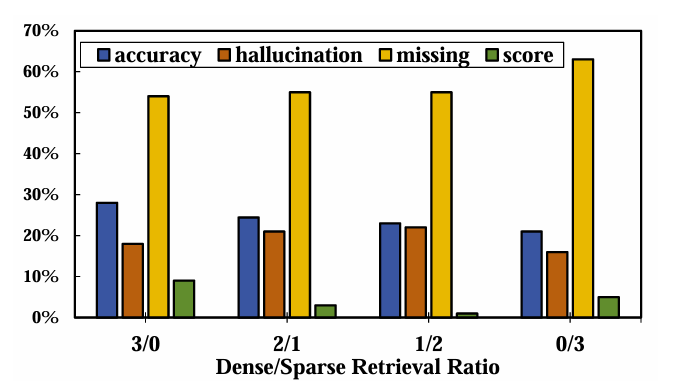
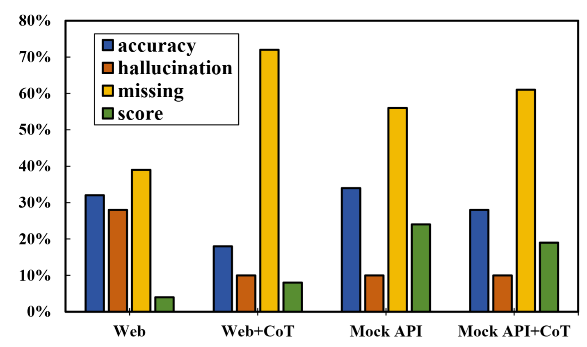
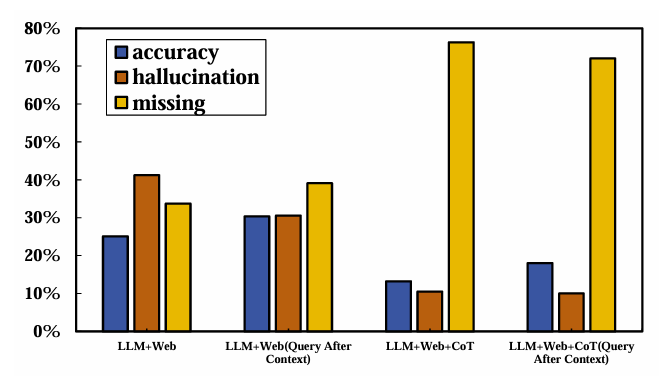
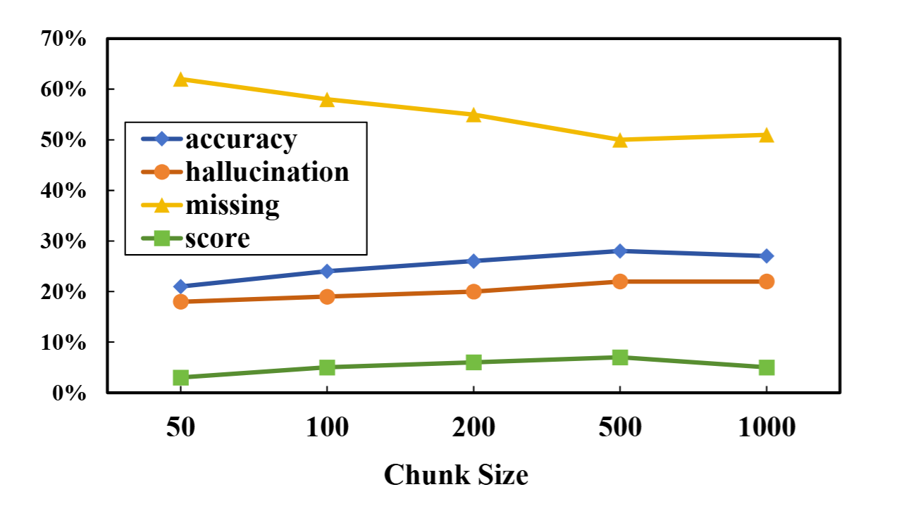
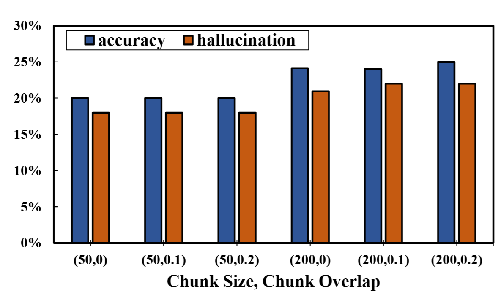

Retrieval-augmented generation (RAG) is increasingly recognized as an effective approach for mitigating the hallucination of large language models (LLMs) through the integration of external knowledge. While numerous efforts, most studies focus on a single type of external knowledge source. However, in real-world applications, most situations involve diverse knowledge from various sources, yet this area has been less explored. The main dilemma is the lack of a suitable dataset containing multiple knowledge sources and pre-exploration of the associated issues. To address these challenges, we standardize a benchmark dataset that combines structured and unstructured knowledge across diverse and complementary domains. Based on this dataset, we further develop a plug-and-play RAG framework, PruningRAG, whose main characteristic is to employ multi-granularity pruning strategies for optimizing the integration of relevant information and minimizing misleading context. Building upon the standardized dataset and PruningRAG, we also report a series of experimental results, as well as insightful findings. Our dataset and code are publicly available here, with the aim of advancing future research in the RAG community.
Overview
Benchmark Evaluation of RAG
Table 1: Comparative analysis of RAG performance across different external knowledge configurations.
External Knowledge
Method
Acc.
Halluc.
Miss.
Score
None
LLM-Only
15.61%
20.42%
63.97%
-4.81%
5 Web pages
Naive RAG
7.51%
8.68%
83.81%
-1.16%
HyDE
24.36%
17.72%
57.91%
6.64%
PruningRAG
27.64%
18.16%
54.19%
9.48%
Mock API
Naive RAG
8.53%
1.60%
89.86%
6.93%
HyDE
19.84%
11.09%
69.07%
8.75%
PruningRAG
29.03%
10.86%
60.10%
18.16%
5 Web pages + Mock API
Naive RAG
15.10%
7.95%
76.95%
7.15%
HyDE
22.07%
21.88%
56.09%
0.15%
PruningRAG
44.64%
17.58%
37.78%
27.06%
50 Web pages + Mock API
Naive RAG
14.22%
8.90%
76.88%
5.32%
HyDE
32.68%
19.69%
47.63%
12.99%
PruningRAG
38.73%
14.59%
46.68%
24.14%
Empirical Study
Knowledge Source Selection
This section discusses the importance of selecting the right knowledge sources for RAG frameworks. The effectiveness of the generated responses depends heavily on the quality and relevance of the external knowledge sources. Various selection strategies are compared to determine the optimal method for different types of queries.
Table 2: Comparison of performance of different strategies for leveraging knowledge sources.
Experiment Setting
Acc.
Score
LLM
17.94%
-0.36%
Web pages
27.64%
9.48%
Mock API
34.43%
24.43%
Both
40.26%
18.31%
LLM+Web pages
17.94%
7.80%
LLM+Mock API
40.55%
22.25%
LLM+Both
45.73%
14.37%
LLM → Web pages
25.30%
-5.84%
LLM → Mock API
35.01%
11.31%
LLM → Both
38.22%
6.64%
Knowledge Source Pruning
40.34%
27.72%
Retrieval for Knowledge Extraction
Retrieval is a crucial step in the RAG process. In this subsection, we analyze different retrieval techniques and their performance in extracting relevant information from knowledge sources. We also explore the trade-offs between speed and accuracy in various retrieval methods.
Table 3 compares the performance of the RAG system with and without a broad retrieval step, where each query is supplemented with 50 web pages—far more than the 5 used in other experiments. The results demonstrate that this broad retrieval phase significantly enhances system efficiency, notably reducing processing time. Sparse retrieval methods like BM25 filter out irrelevant data, allowing dense retrieval to focus on a more targeted subset of external knowledge.
Table 3: Comparison of effectiveness and efficiency with and without broad retrieval.
Setting
Acc.
Hall.
Latency (s)
Broad Retrieval (w/)
28.96%
25.09%
3.29
Broad Retrieval (w/o)
28.95%
24.36%
33.54
Figure 1 illustrates the trade-offs between dense and sparse retrieval configurations in a RAG system. While higher dense retrieval ratios boost accuracy due to richer semantic understanding, they also elevate hallucination rates, suggesting a risk of contextual misalignment. Conversely, increasing sparse retrieval may lower accuracy and fails to consistently reduce hallucinations, likely because of its dependence on surface-level keyword matching.

Figure 1: Performance of varying retrieval methods in RAG.
Table 4 summarizes the impact of various reranker configurations on RAG system performance, focusing on different retrieval chunk sizes. The results show that as the number of retrieved chunks increases, hallucination rates rise, while accuracy remains stable, suggesting that the reranker performs better with smaller, more focused sets.
Table 4: Performance of reranker configurations in RAG.
Config.
Acc.
Halluc.
Miss.
Score
(3, 3)
24.14%
20.42%
55.43%
3.72%
(3, 5)
23.85%
22.68%
53.46%
1.17%
(3, 10)
24.51%
23.05%
52.44%
1.46%
(3, 20)
25.38%
23.34%
51.28%
2.04%
(3, All)
25.46%
23.41%
51.13%
2.04%
Note: (3, X) denotes retrieval of X chunks, with (3, All) indicating all chunks passed directly.
Knowledge Reasoning
Once the relevant knowledge is extracted, reasoning over this information becomes essential. This subsection delves into different reasoning techniques and how they can be effectively combined with retrieval results to generate coherent and accurate responses.
Figure 2 illustrates the context-dependent impact of incorporating Chain of Thought (CoT) into RAG systems. While CoT aims to enhance logical reasoning, the results indicate that it does not consistently improve performance and can sometimes reduce accuracy, especially when dealing with multiple conflicting knowledge sources.

Figure 2: Impact of CoT across knowledge sources.
Table 5 presents the impact of few-shot learning on RAG systems, particularly in identifying false premises across various domains. The results show that the model performs best under 0-shot conditions. However, as more examples are introduced, performance on these questions declines due to overfitting and noise. Despite this, overall accuracy improves with few-shot examples, which provide task-specific guidance. Cross-domain examples also enhance generalization and reduce hallucination rates, demonstrating the value of diverse examples in broadening the model's adaptability across different query types.
Table 5: Impact of few-shot learning on LLM reasoning.
Category
N
Acc.
Hall.
Miss.
Score
Overall
0
13.20%
10.50%
76.29%
2.70%
1
16.05%
12.62%
71.33%
3.43%
2
16.12%
12.98%
70.90%
3.14%
3
15.17%
12.69%
72.14%
2.48%
1*
16.12%
11.89%
71.99%
4.23%
2*
18.02%
11.23%
70.75%
6.78%
3*
16.41%
11.60%
72.00%
4.81%
False Premise
0
25.00%
5.77%
69.23%
19.23%
1
16.03%
14.10%
69.87%
1.93%
2
16.57%
13.46%
69.87%
3.11%
3
17.31%
12.82%
69.87%
4.49%
1*
20.51%
12.18%
67.31%
8.33%
2*
19.87%
11.54%
68.59%
6.33%
3*
23.08%
9.62%
67.30%
13.46%
Note:N* indicates that the N examples provided for in-context learning are cross-domain examples.
Figure 3 illustrates the effect of query position within the prompt on RAG system performance. The results show that placing the query after the reference information not only increases accuracy but also reduces hallucination rates, suggesting that the model benefits from having more context before addressing the query.

Figure 3: Impact of query position within prompt.
Figure 4 illustrates the impact of varying noise chunks on RAG system performance. The results show that as the number of noise chunks increases, accuracy initially dips but then improves, reaching its peak at moderate noise levels. Interestingly, while hallucination rates rise with the introduction of noise, they tend to stabilize and slightly decrease at higher noise levels. This suggests that a certain degree of noise may prompt the model to better filter out irrelevant information.
Figure 4: Performance comparison based on noise chunk quantity in RAG.
Impact of Hyperparameter Configurations
The performance of RAG frameworks can be significantly influenced by the choice of hyperparameters. In this subsection, we present a detailed study on the impact of various hyperparameter configurations and provide recommendations for optimal settings based on different scenarios.

Figure 5: Effect of chunk size on RAG performance.

Figure 6: Impact of chunk overlap on RAG performance.
Contact
If you have any questions, we encourage you to either create Github issues
or get in touch with us at rag_ustc@icanary.cn.